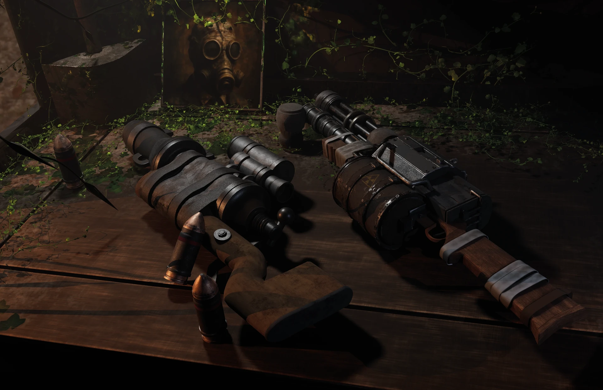
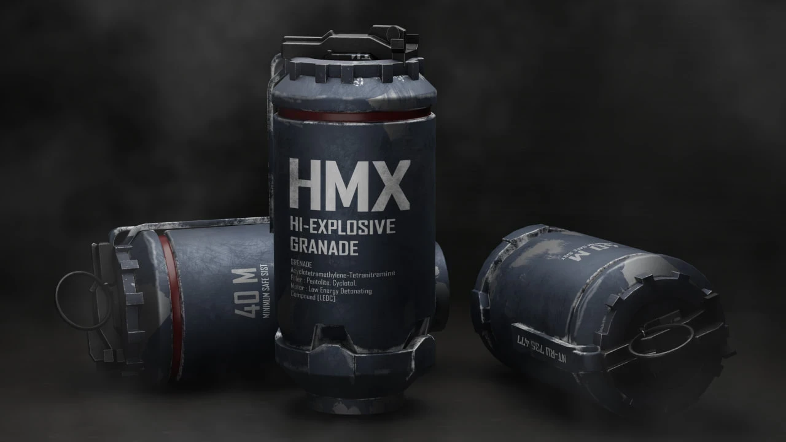
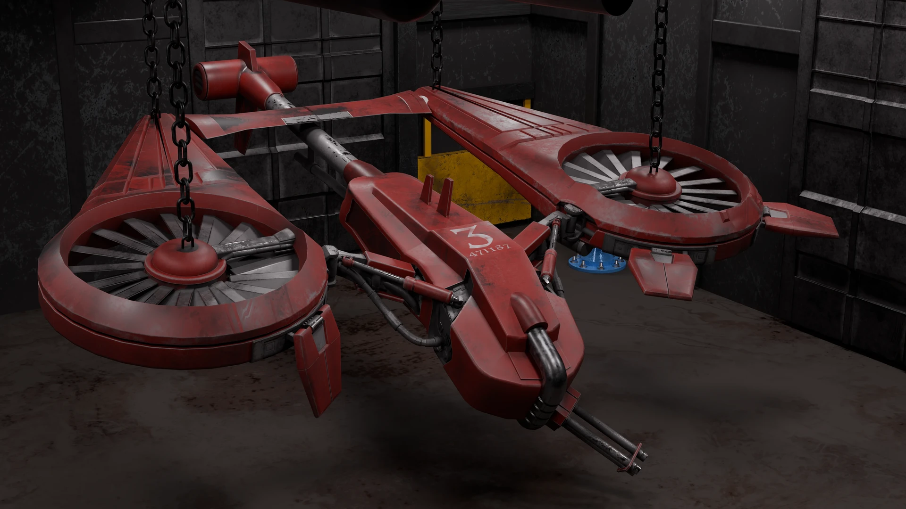
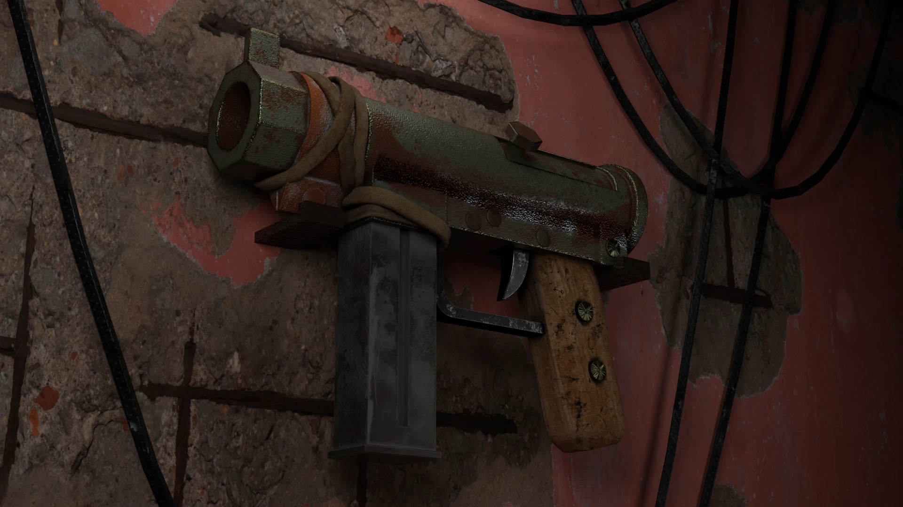

ARTE 3D — destacado
PlanoNº Vintage Optics

Colección de equipo óptico antiguo en un entorno deteriorado. Realismo de materiales, oxidación e iluminación atmosférica. Pieza destacada de la serie.
Cuatro piezas de 3D: modelado, materiales y luz. La destacada es Vintage Optics y cada ficha enlaza a su proyecto en ArtStation.
02 / Render
Hard-surface de principio a fin: equipo óptico antiguo, munición con volumétricos, un estudio de luz roja y un entorno con armamento.

Colección de equipo óptico antiguo en un entorno deteriorado. Realismo de materiales, oxidación e iluminación atmosférica. Pieza destacada de la serie.
Activos de munición militar con humo y partículas por nodos. Atmósfera volumétrica y realismo de materiales para juego y VFX.


Estudio de luz roja y volumen. Detalle de material y atmósfera en formato alto.
Entorno con armamento. Composición y luz para mostrar activos en contexto.

Contacto